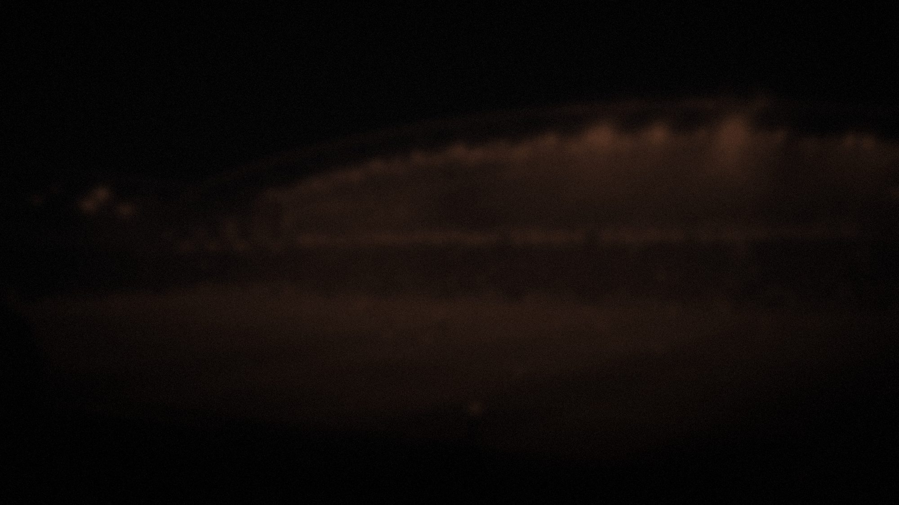
Презентация для клубов
Что даёт клубу Кубок Открытой Лиги Кипербола
Турнир 2027 для молодёжных команд.
- Российский этап
- март–май 2027
- Все матчи
- Реутов, Стадион Академии Игоря Акинфеева А35
Организатор — Фонд «Страна Футбола» Игоря Акинфеева
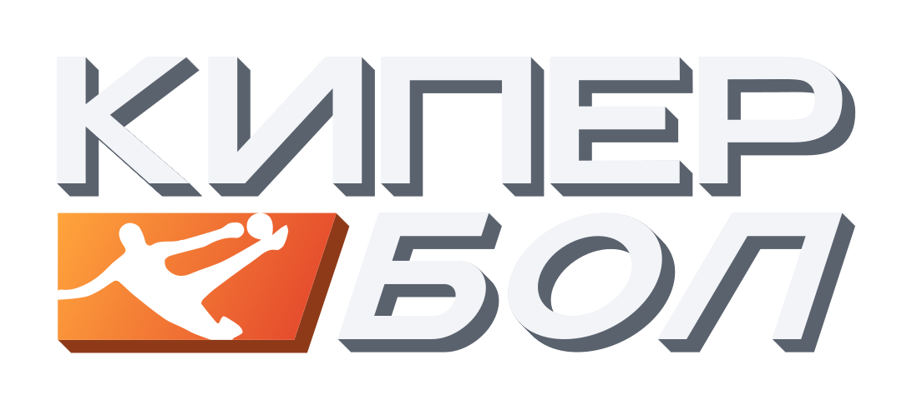
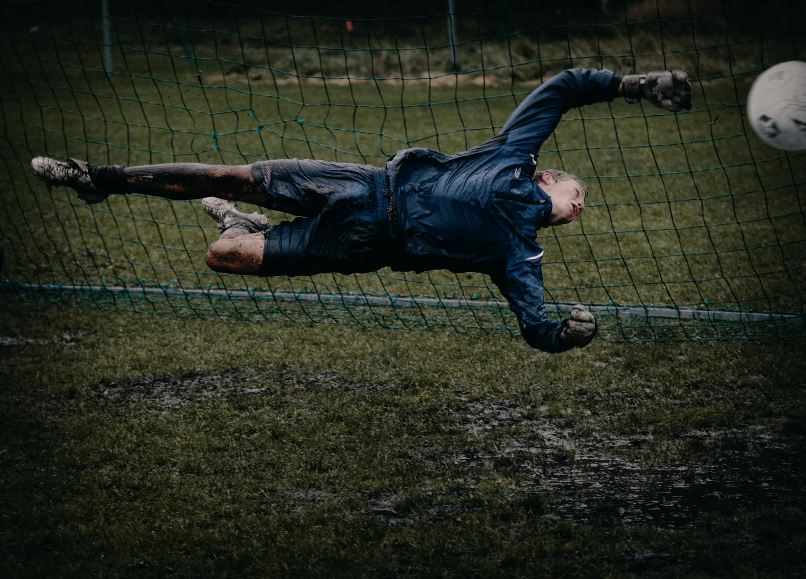
Что такое кипербол
Кипербол развивает всю команду, а не только вратарей
Кипербол (KeeperBall) — новый формат футбола, разработанный Фондом «Страна Футбола» Игоря Акинфеева. Вратарь здесь — ключевой герой матча, но в выигрыше вся команда.
- Полевые игроки: высокая динамика и быстрота принятия решений
- Отработка тактических действий в игровых условиях
- Тесная связь вратаря с полевыми — команда действует как единое целое
- Преемственность отечественной вратарской школы и поиск новых талантов
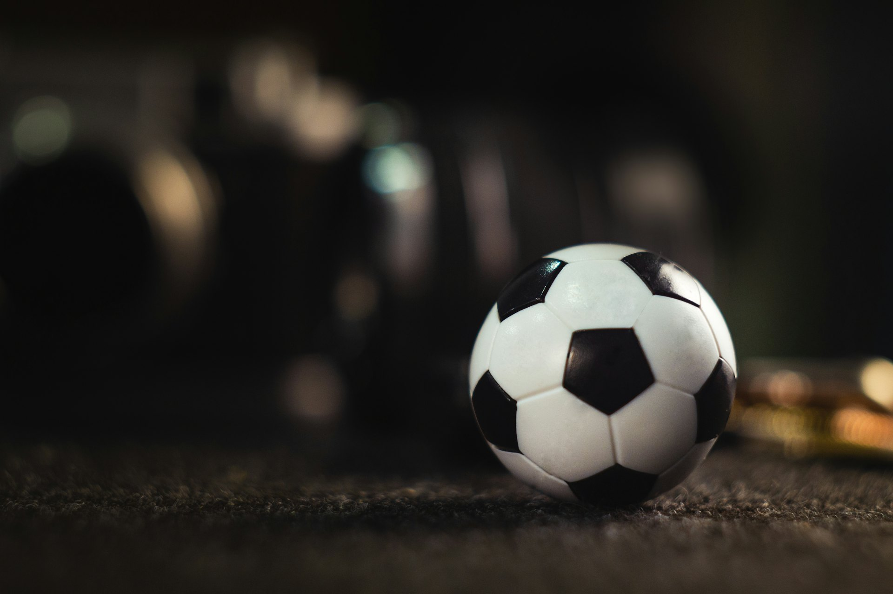
Формат матча
Два тайма, три очка: каждая часть матча работает на результат
- 1-й тайм
Кипербатл
Битва вратарей: 2×2, площадка 22 × 26 м, 2 тайма по 4 минуты. Победа — 1 очко.
- 2-й тайм
Футбольный матч
10×10, 60 минут, без ограничения замен. Победа — 2 очка.
- Финал матча
Серия пенальти
По 7 ударов, первыми бьют вратари. Победитель серии — победитель матча.
Возможное распределение очков — 3:0 или 2:1. В плей-офф за кипербатл вместо очка команда получает фору в один гол.

Почему это нужно клубу
Пять причин выйти на турнирное поле
- 1
Соревновательная практика
Дополнительные матчи на результат: борьба за очки и выход в финал четырёх. Один из главных элементов турнира.
- 2
Все игроки в деле
Как в Кубке России: тренер видит в игре весь состав, включая тех, кому не хватает минут в молодёжном чемпионате.
- 3
Внимание к молодёжному футболу
Популяризация молодёжного футбола и молодёжного чемпионата России. Турнир будут освещать ведущие СМИ.
- 4
Шанс заявить о себе
Дополнительные возможности для молодых игроков.
- 5
Организация — на нас
Все матчи в Реутове: поле, судейство и проведение игр берёт на себя организатор.
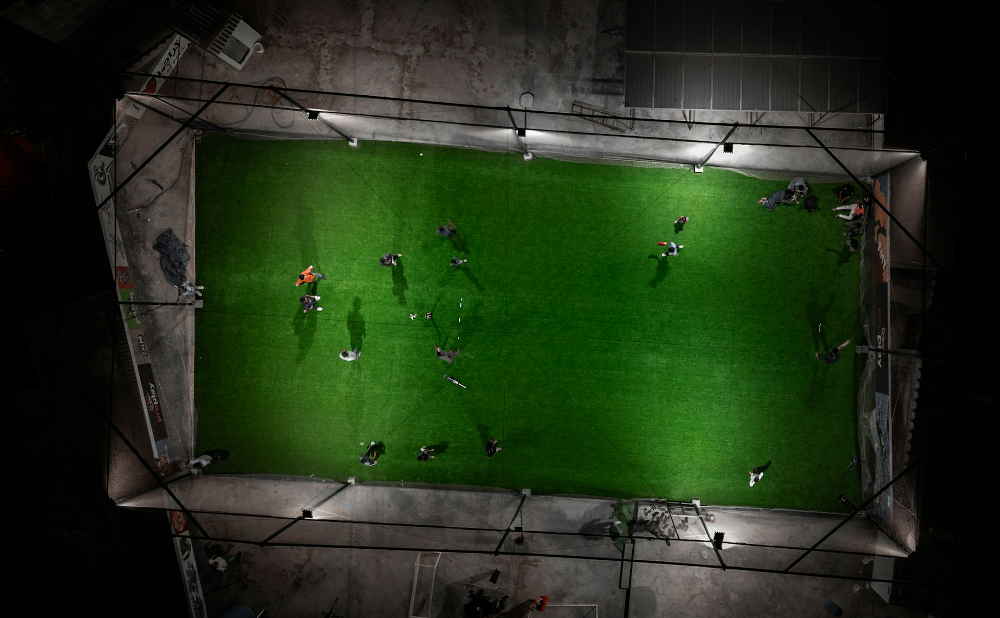
Участники 2027
Вы играете среди молодёжных команд профессиональных клубов
8 команд Москвы и Московской области — участники молодёжного чемпионата России (группы А и Б).
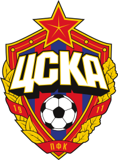
ЦСКА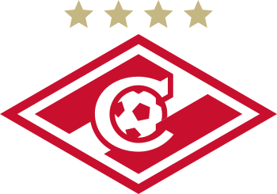
Спартак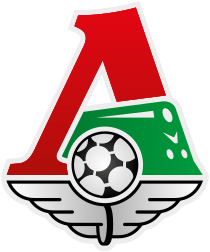
Локомотив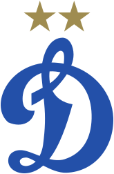
Динамо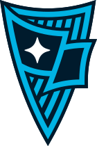
Родина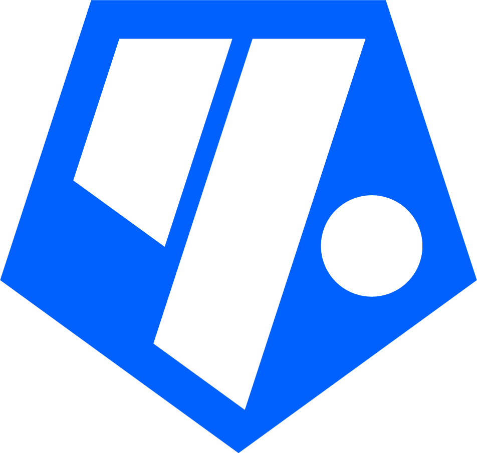
Чертаново- Мастер-Сатурн
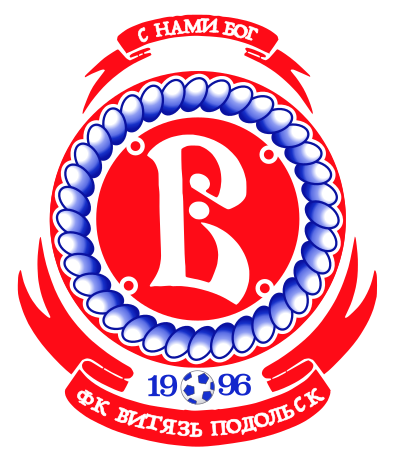
Витязь
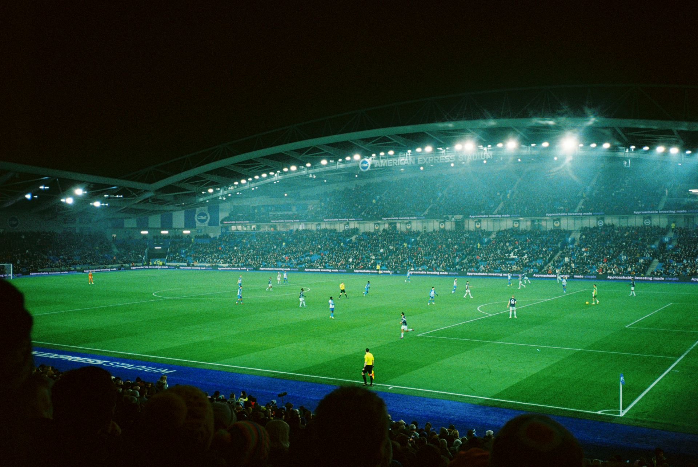
Российский этап · 2027
Все матчи — в Реутове, между турами молодёжного чемпионата
- Март–майИгры проходят еженедельно, по вторникам — между турами молодёжного чемпионата России, в один круг: 7 игр у каждой команды, 10 игровых дней с 23 марта по 25 мая
- Одна аренаВсе игры и финал — в Реутове. Выгодно командам: организация матчей ложится на нас, транспортная доступность хорошая
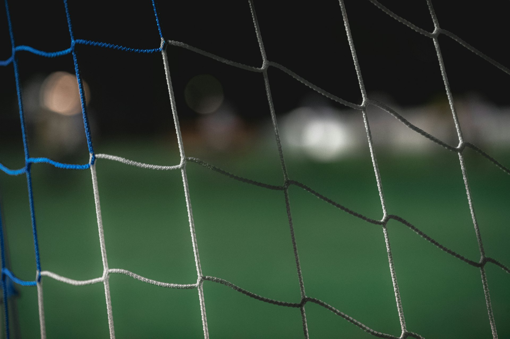
Финал российского этапа
Финал — на новейшем стадионе в Реутове
Финал четырёх — 29 (30) мая 2027 на новейшем стадионе с отличной инфраструктурой и прекрасным расположением: полуфиналы определяют финальную пару.
- Стадион — домашняя арена кипербола: на нём расположена Академия Игоря Акинфеева А35
- Победитель российского этапа награждается Кубком Открытой Лиги Кипербола (Россия)
- От РЖД Арены≈ 15 км · от 20 мин
- От ВТБ Арены≈ 28 км · от 30 мин
- От ВЭБ Арены≈ 32 км · от 35 мин
- От Лукойл Арены≈ 38 км · от 45 мин
Время в пути — на машине, без пробок.
Домашняя арена кипербола
Реутов — центр развития кипербола
Реутов и Академия Игоря Акинфеева А35 — центр развития кипербола, российского формата футбола: импортозамещение в спорте. Здесь проходят все матчи турнира, а не только финал.
- Все матчи здесьВесь российский этап и финал — на одном стадионе в Реутове
- Организация — на насЭто выгодно командам: организация матчей ложится на организатора
- Удобно добиратьсяТранспортная доступность хорошая: станция Реутово (МЦД-4) — 1 км, метро «Новокосино» — 2 км
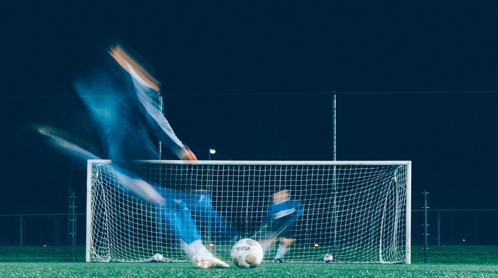
Освещение
Ваших игроков увидят: турнир будут освещать ведущие СМИ
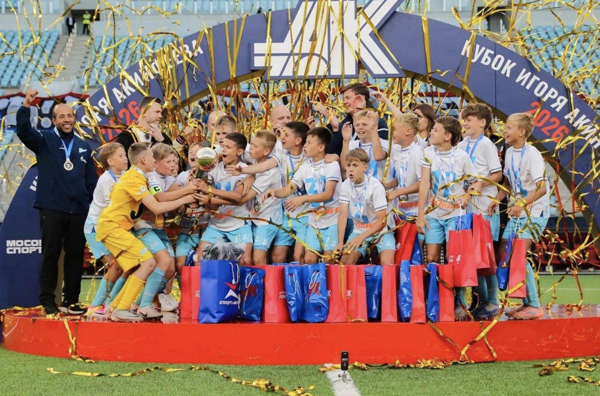
- Игорь Акинфеев лично участвует в популяризации проекта
- Репортажи на федеральных каналах
- Трансляции и публикации на ведущих новостных и спортивных порталах и в социальных сетях

Следующий шаг
Кубок России — для молодёжных команд
Кубок Открытой Лиги Кипербола — как Кубок России, только для молодёжных команд: дополнительные матчи на результат, в которых в деле весь состав. Организацию берём на себя — присоединяйтесь к турниру 2027.
- Почтовый адрес
- 121099, г. Москва, Новинский бульвар, 11
- stranafond@yandex.ru
- Сайт
- keeperball.ru
1 / 10
Скачать PDF